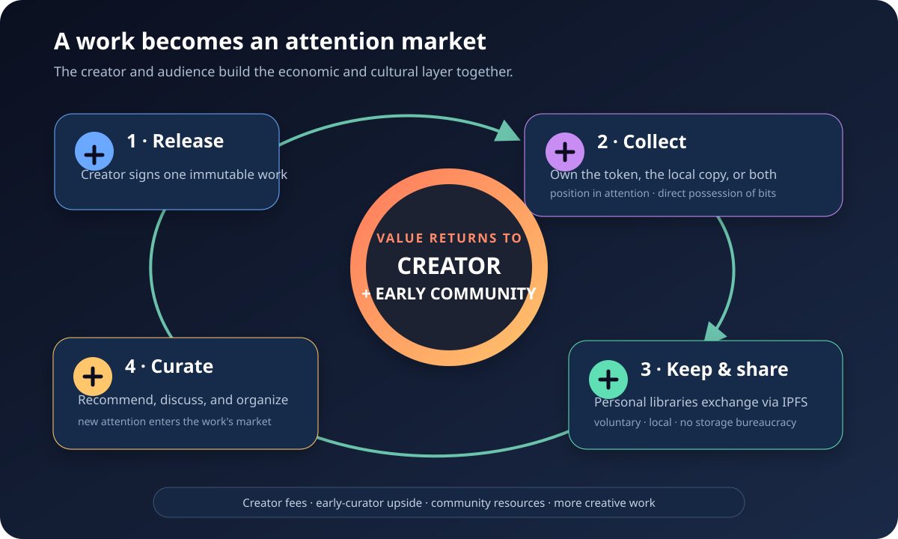
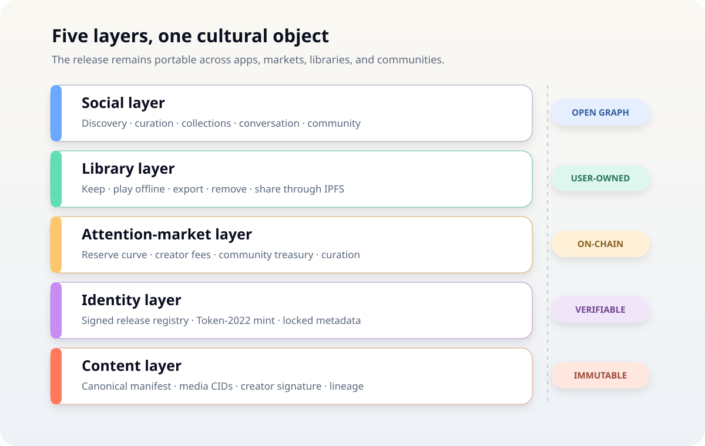
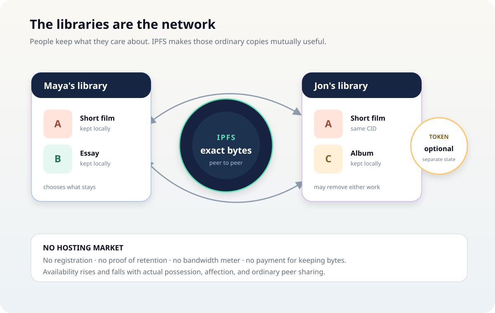
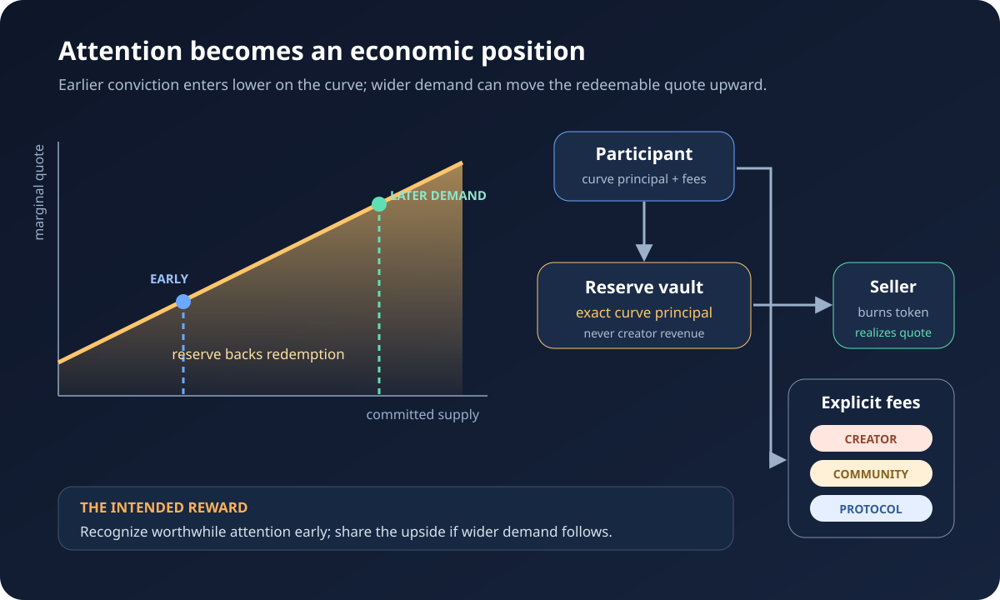

Discussion draft 0.2 · July 2026
MediaToken
Own the attention. Keep the work.
A creator-and-community attention economy built on Solana, with IPFS as its content transport
Abstract#
Creative work produces attention. That attention has economic value, but today's platforms capture most of it. Creators receive a fraction through advertising, subscriptions, or platform-controlled payouts. Audiences create the rest through discovery, recommendation, conversation, collecting, and distribution—usually without ownership of the value they helped produce.
MediaToken proposes a different arrangement. Each immutable release—a song, film, essay, game, image, or bundle—can have:
- a signed, content-addressed identity;
- a fungible token representing a transferable position in the attention around that release;
- a transparent market that rewards the creator and gives early participants exposure to later demand;
- an open social graph for curation and community; and
- actual media bytes held in user-controlled local libraries and exchanged over IPFS.
IPFS is not the product and this is not a storage marketplace. People keep the works they care about because they want them. Their overlapping libraries become the distribution network. No one must register a disk, prove a pin, meter bandwidth, or earn a hosting payment.
The central proposal is deliberately bold:
Audiences should be able to capitalize the attention they help create instead of donating all of it to a platform.
A MediaToken does not convey copyright, exclusive ownership of media, control over a creator, or ownership of anyone else's attention. It is an economic and social position associated with one cultural object. Its value can rise or fall with demand. That creates opportunity, speculation, and legal risk; all three must be described honestly.
1. The idea in two minutes#
Imagine an independent filmmaker releases a short documentary.
The filmmaker publishes one immutable manifest containing the film's IPFS content identifier, files, edition, rights statement, and signature. A Solana registry anchors that release and creates its MediaToken.
A viewer discovers the film and can do two independent things:
- keep the work: download the exact verified bytes into a personal library, play it offline, and make it available to peers while online;
- back the attention: acquire the film's MediaToken because they believe the work deserves a larger audience.
The viewer recommends it, adds it to a collection, discusses it, or introduces it to a community. More people watch it. Some keep local copies. Some acquire the token. New demand moves the token's curve.
The filmmaker earns explicit fees from market activity. People who recognized the work before wider attention arrived may be able to sell their position higher on the curve. A community treasury can support criticism, translations, events, moderation, and other active work around the release.

Figure 1 — One work becomes an open cultural and economic object shared by its creator and audience.
This changes three familiar relationships:
- A like becomes an optional position with economic consequence.
- A stream becomes a work the audience can actually keep.
- An audience becomes a community and distribution network rather than a platform metric.
The shortest version is:
MediaToken lets creators and audiences jointly own the economic layer around a work's attention.
1.1 Storage follows affection#
People already build libraries of music, books, games, films, photographs, and research. Storage is inexpensive enough for a personal library to contain far more than a person can actively consume at once. The missing ingredient is a simple experience that treats local possession as normal rather than forcing every interaction through a remote platform.
When many people care about a release, many may keep it. IPFS makes their identical, content-addressed copies mutually useful. When interest fades, people may remove the work. Availability therefore rises and falls with affection, collection, and cultural use.
That is not a permanence guarantee. It is a different organizing principle:
People keep the bits they care about; networks serve the bits people keep.
1.2 Attention, not access control#
The content can remain public. A person may keep or share a release without owning its token. A person may hold the token without keeping the media.
The token is not a paywall. It is a way to make conviction, support, and demand portable across applications.
2. Why this should exist#
2.1 Platforms own the economic relationship#
In the dominant media model:
- a creator uploads work to a platform;
- the platform hosts and ranks it;
- audiences create views, follows, recommendations, comments, and behavioral data;
- advertisers, subscribers, or investors fund the platform; and
- the platform decides what fraction reaches the creator.
The creator rents access to the audience. The audience rents access to the work. The platform owns the graph connecting them.
MediaToken asks whether the work itself can become the durable center of that relationship.
2.2 Audiences do real cultural work#
Discovery is productive. So are explanation, criticism, playlist-making, collection-building, translation, event organization, fandom, and bringing an obscure work into the right community.
This labor is difficult to score objectively, but its aggregate effect is obvious: works become culturally important because people carry them to one another.
Platforms convert that activity into retention and advertising inventory. MediaToken instead gives a participant the option to take a position before doing the work of curation. If broader attention follows, the position can become more valuable.
No central reviewer must decide that a recommendation was good. The later audience supplies the verdict through demand.
2.3 Creators deserve continuing participation#
A creator should not have to choose between a one-time sale and an opaque platform royalty. A release-specific market can send an explicit creator fee whenever attention enters or leaves the market.
This does not require the creator to surrender copyright or promise token holders a share of every future business. The token economy and the creator's broader commercial life can remain distinct.
2.4 People should possess culture directly#
A platform account is not a library. Access can disappear when a subscription lapses, a license changes, an application closes, or a catalog is reorganized.
A local MediaToken library stores the canonical bytes and manifest on the user's own device. The work can be played offline and exported. Its CID lets another implementation verify that it has the same release.[1]
This is ownership in the practical sense of direct, non-exclusive possession—not ownership of copyright.
3. What “ownership” means#
MediaToken deliberately places two different forms of ownership side by side.
3.1 Own the token#
The holder owns a transferable fungible token linked to one release. That token is a position in the market for committed attention around the release.
Acquiring it can mean:
- “I believe this deserves a larger audience.”
- “I want to be publicly associated with this work.”
- “I want exposure to future demand.”
- “I want to participate in this community.”
- “I want to support this creator.”
The market cannot know which motivation dominates.
3.2 Own a copy#
The collector controls a local copy:
- exact media bytes live on storage they control;
- integrity is verifiable;
- playback does not require the originating platform;
- the release can be exported;
- retention can continue offline; and
- deletion is the collector's choice.
Other people can possess the same bytes. Copy ownership is therefore non-exclusive.
3.3 Ownable attention#
No one owns human attention itself. The provocative shorthand “ownable attention” refers to a narrower mechanism:
A person can own a transferable token whose supply and curve price respond to committed demand for a specific cultural object.
The token turns early belief from an ephemeral platform interaction into a position that stays with the participant.
It does not guarantee that later people will care.
3.4 Four valid states#
| MediaToken | Local copy | Relationship |
|---|---|---|
| Held | Kept | The person holds the position and the artifact |
| Held | Not kept | Market or social participation without local retention |
| Not held | Kept | Direct possession without financial participation |
| Not held | Not kept | No current relationship |
The protocol never uses one state as proof of another.
3.5 What is not owned#
By default, neither a token nor a local copy grants:
- copyright;
- commercial exploitation rights;
- exclusivity;
- control over the creator;
- creator or protocol revenue;
- passive yield;
- a right to another person's attention;
- guaranteed access, price, liquidity, or persistence.
U.S. law expressly distinguishes copyright ownership from ownership of an object embodying a work, and copyright transfers generally require a signed writing.[2][3] Other jurisdictions require their own analysis.
4. Design principles and non-goals#
4.1 Principles#
Creators and audiences are on the same side. Both benefit when worthwhile attention grows around a release.
A library, not a feed. The primary media experience is a user-controlled collection, not an infinite rented stream.
Likes become positions. Financial participation is optional, but it can make conviction durable and portable.
Infrastructure disappears. Users choose “Keep in my library,” not “register a storage commitment.”
Distribution is voluntary. People share because they care about the work, not because the protocol pays them to impersonate storage providers.
Immutable releases, explicit editions. A token always points to an immutable manifest; it never silently changes the media it represents.
The market measures commitment, not truth. Price and supply are inputs to discovery, never universal rankings.
Open edges, small core. Libraries, players, indexers, communities, and recommendation systems are replaceable.
Leaving is legitimate. A person can remove the bytes, sell the token, do both, or do neither.
4.2 Non-goals#
The baseline does not attempt to:
- pay people for pinning, bandwidth, downloads, views, likes, or comments;
- prove that a holder retains content;
- guarantee permanent storage;
- make public IPFS content private;
- transfer copyright by default;
- make price synonymous with artistic quality;
- define one global discovery algorithm;
- create a global protocol token;
- distribute creator revenue passively to every holder;
- prevent all copying or erase all copies; or
- launch a real-value market before security, economic, rights, and legal review.
5. System architecture#
MediaToken has five layers. Each can evolve without turning one kind of evidence into another.

Figure 2 — The release is the common object; identity, market, library, and community remain separable.
| Layer | Job | Source of truth | Does not prove |
|---|---|---|---|
| Content | Identify the exact released work | IPFS CIDs and canonical manifest | Availability, authorship, legality |
| Identity | Anchor creator, mint, parameters, and lineage | Solana release registry | Copyright ownership or local possession |
| Attention market | Mint, redeem, account reserves, and route fees | Solana market program | Quality, truth, or future demand |
| Library | Keep, play, export, remove, and share media | User-controlled local store | Token ownership or promised uptime |
| Social | Discover, curate, collect, discuss, and coordinate | Replaceable indexers and signed app records | Canonical state without verification |
5.1 Actors#
- Creator: signs and activates a release; receives disclosed creator fees.
- Holder: owns some quantity of the release's MediaToken.
- Collector: keeps the media in a local library.
- Curator: finds, contextualizes, recommends, or organizes releases.
- Community contributor: performs active work around a release.
- Indexer/client: turns canonical events and manifests into useful discovery and social experiences.
- Protocol governance: controls bounded upgrades during early deployment.
One person can occupy several roles, but the protocol does not assume that they do.
6. The immutable release#
6.1 Canonical manifest#
An illustrative release manifest is:
{
"schema": "mediatoken.release.v1",
"title": "Example release",
"creator_wallet": "<solana-public-key>",
"published_at": "2026-07-15T00:00:00Z",
"root_cid": "bafy...",
"files": [
{
"path": "main.mp4",
"cid": "bafy...",
"mime": "video/mp4",
"bytes": 12345678,
"sha256": "..."
}
],
"preview_cid": "bafy...",
"rights": {
"rights_uri": "ipfs://bafy...",
"token_grants": "attention-position-only"
},
"lineage": {
"supersedes": null,
"series": null
},
"import_profile": "mediatoken-ipfs-v1",
"signature": "..."
}
The creator signs the canonical manifest digest. A Solana Program Derived Address anchors that digest, release parameters, mint, creator, and successor relationship.[4]
A wallet signature proves control of a key, not legal identity or authorship. Clients can layer verified creator identities on top.
6.2 Deterministic content identity#
A CID is not merely a file checksum. Codec, chunking, DAG layout, hash, CID version, and raw-leaf choices can change it even when logical file bytes match.[1:1]
The mediatoken-ipfs-v1 import profile fixes:
- CID version and codec;
- hash algorithm;
- chunking algorithm and size;
- DAG layout and raw-leaf policy;
- path normalization; and
- canonical JSON encoding.
The manifest also records byte length and SHA-256 for conventional verification and migration.
6.3 Edition integrity#
After activation:
- the manifest pointer is immutable;
- the mint has no freeze authority;
- metadata update authority is cleared;
PermissionedBurnauthority is fixed to the market PDA; and- market parameters are fixed for that release.
The market PDA remains the only mint authority and the required co-signer for a burn; the holder or delegate must also authorize a burn from the token account.
A correction, translation, remaster, or new edition creates a new release linked through supersedes. The old token still identifies the old work.
6.4 Token-2022 profile#
Token-2022 supplies the fungible mint and metadata interface.[5] The baseline uses:
- on-mint TokenMetadata;
- URI
ipfs://<manifest-CID>; - fixed decimals;
- market-program mint authority;
PermissionedBurnConfigwith the market PDA as required burn co-signer;- no freeze authority after activation;
- no metadata update authority after activation; and
- no transfer-fee or transfer-hook extension in version 1.
The permissioned-burn extension rejects ordinary burns while configured and requires both the configured authority and token-account owner or delegate to sign.[6] Its authority must stay fixed: clearing it re-enables ordinary burns.
Extensions must generally be selected before initialization, and combinations require compatibility testing.[7] One mint per release also creates wallet, associated-account, rent, indexing, and spam overhead that the pilot must measure.
7. The personal library#
The library is where the protocol becomes tangible.
7.1 Product actions#
A compatible client should expose:
- Keep in my library
- Remove local copy
- Play or read offline
- Verify release
- Export release
- Share with peers
- Acquire or sell MediaToken
- Add to collection
- Recommend
These are ordinary cultural actions. The user should not need to understand DHTs, blocks, provider records, or garbage collection.
7.2 What “keep” does#
Internally, the client retrieves the canonical DAG and protects it from local garbage collection. Kubo may implement that through a pin or MFS reference; another client may use an embedded IPFS node or compatible content-addressed store.[8]
No protocol transaction occurs. The choice remains local and can remain private.
When online and configured to participate, the node can serve retained blocks to peers. IPFS Bitswap exchanges wanted blocks between peers, while provider routing helps find candidate sources.[9][10]
7.3 The audience becomes the network#

Figure 3 — Overlapping personal libraries distribute exact works without a hosting market.
The system does not recruit a separate class of professional hosts. Fans, collectors, creators, archivists, and institutions keep the works they choose.
There is:
- no host registration;
- no proof of pinning;
- no disk or bandwidth meter;
- no storage bond;
- no retrieval verifier;
- no availability reward; and
- no requirement to hold a token.
This removes an entire oracle and Sybil problem. It also removes any service guarantee.
7.4 Availability is emergent#
A creator supplies the first copy. Each additional library may add another source. A popular work will often have more copies than an ignored one. A small but devoted community may keep an obscure work available for years.
But if every participant removes a release, the CID cannot reconstruct missing bytes and the work becomes unavailable for new retrieval. “Immutable” describes release identity, not guaranteed availability. IPFS provides addressing and verified retrieval, not permanence.[8:1]
Creators or collectors may separately use paid pinning, Filecoin, institutional archives, or backups. Those are optional insurance, not MediaToken's economic center.
7.5 Leaving#
A user who loses interest can:
- remove the local work but keep the token;
- sell the token but keep the work;
- remove and sell both; or
- keep both without remaining socially active.
The system treats changing taste as normal, not as breach of a storage contract.
7.6 Privacy and safety#
Public IPFS is public. Requests, provider advertisements, wallet holdings, and client telemetry can reveal cultural interests.[11]
Clients should support:
- local-only or non-providing mode;
- privacy-conscious gateways or transports;
- separate wallet and peer identities;
- sandboxed media rendering;
- MIME and size validation;
- malware scanning where appropriate; and
- clear indication of what is public.
8. The attention market#
The market converts costly commitment into a public signal and economic position. It does not count eyeballs.
8.1 What the market observes#
The protocol can observe:
- circulating token supply;
- curve quote;
- reserve balance;
- unique wallets;
- holder concentration;
- creator holdings;
- holding duration;
- buy and sell activity; and
- creator, community, and protocol fee flows.
It cannot observe why someone bought, whether they watched the work, whether a recommendation was sincere, or whether the work is good.
8.2 Fully reserved linear curve#
Let:
- S be circulating supply;
- p₀ be starting marginal quote;
- k be positive slope;
- P(S) be marginal quote; and
- B(S) be required reserve.
Buying ΔS requires curve principal:
Selling ΔS releases:
“Fully reserved” means the reserve vault equals B(current supply). It does not mean every holder can redeem at the current marginal quote. Redemptions move down the curve.
8.3 Fees and value flow#
Let fᶜ, fᵐ, and fᵖ be creator, community, and protocol fee rates.
On buy:
On sell:
The reserve receives exactly C on mint and releases exactly R on burn. Creator or community funds cannot be skimmed from reserve principal.

Figure 4 — The reserve backs redemption; explicit fees reward the creator and fund community activity.
Token-2022 transfer fees are not used for this baseline. They collect the transferred token itself rather than implementing stable-asset curve settlement and fee routing.[12]
8.4 Creator reward stream#
The creator receives a disclosed share of market fees whenever attention enters or leaves the release market.
The creator may also hold a launch position. Every redeemable creator token must have corresponding reserve principal, and the source of that backing must be visible. There is no hidden redeemable premine.
The creator can separately earn from performances, access, memberships, commissions, merchandise, licensing, sponsorship, or other commerce. MediaToken holders have no default claim on that income.
8.5 Early-curation upside#
The curve intentionally makes early conviction economically consequential.
For a linear curve, a participant who buys q tokens at any starting supply and later sells that whole position after other net demand adds v tokens has gross gain before fees:
Here v is the net supply added after the purchase, excluding the participant’s q. Substituting the integral buy cost and later redemption into B(S) cancels the starting supply, p₀, and the q² terms.
That is the primary reward for identifying and supporting attention early.
It is also the primary speculative risk. The gain comes from later net inflows, not from the content producing cash. If demand leaves before the participant exits, the same curve moves downward.
The paper should not apologize this mechanism away; it is part of the thesis. It should also never hide who funds it.
8.6 Numerical example#
Suppose:
- starting quote p₀ = $0.10;
- quote at 10,000 tokens = $1.00;
- therefore k = 0.00009.
| Supply | Marginal curve quote | Locked reserve |
|---|---|---|
| 1,000 | $0.19 | $145 |
| 5,000 | $0.55 | $1,625 |
| 10,000 | $1.00 | $5,500 |
A participant buying the first 1,000 tokens contributes $145 of principal before fees. If later net demand raises supply to 5,000, redeeming those tokens returns $505 before fees: a $360 gross gain.
That example is not a forecast. It reveals the mechanism.
8.7 Batch launch#
A 24–72 hour initial batch reduces the advantage of being the first ordered transaction.
If supporters contribute total curve principal Q:
Participants receive S₁ pro rata at one average price. The batch discloses cap, minimum settlement, creator holdings, fees, and refund behavior.
8.8 Automatic quote is not fair value#
The curve supplies a deterministic quote without a matching order at that instant. It does not guarantee:
- organic demand;
- fair value;
- exit at the last marginal quote for every holder;
- protection from runs or depegs;
- resistance to transaction ordering;
- suitable collateral pricing; or
- profit.
Every trade includes maximum cost or minimum return and a deadline.
9. Creator, curator, and community rewards#
The system has three distinct reward channels.
| Role | Baseline reward | What creates it |
|---|---|---|
| Creator | Quote-asset creator fees | Market activity around the release |
| Early holder/curator | Change in redeemable curve position | Later net demand after early conviction |
| Active contributor | Transparent grants, bounties, or optional attribution fees | Deliberate community funding |
9.1 Curation as judgment#
A curator creates value by:
- finding work early;
- explaining why it matters;
- placing it in a meaningful collection;
- connecting it to the right audience;
- preserving context;
- organizing conversation; and
- making the community legible to newcomers.
The base protocol does not award points for these acts. The curator takes a position, performs the work, and lets later demand judge the result.
9.2 Community treasury#
A disclosed community fee can enter a release-specific treasury. It can support:
- criticism and commentary;
- translations and accessibility;
- playlists and collections;
- events;
- moderation;
- tools and integrations;
- licensed remixes;
- historical context; and
- onboarding.
A treasury can pay stable-asset grants or buy fully backed MediaTokens from the curve for distribution. It cannot mint unbacked redeemable tokens.
The first governance can be creator stewardship or a small release multisignature. Token-weighted voting is optional and should not decide copyright or safety disputes.
9.3 Curator attribution experiment#
A client may let a buyer voluntarily attribute discovery to a curator. A bounded community fee could reward demand that remains after a delay.
This is not a baseline promise. Referrals are vulnerable to self-dealing, Sybil identities, and wash trading. Any experiment needs hard caps, delayed settlement, conflict disclosure, and comparison against a no-reward control.
9.4 The positive-sum question#
A reserve curve alone redistributes quote assets among participants and charges fees. After costs, it is negative-sum as a closed financial system.
The broader creative economy can be positive-sum when attention causes external value:
- people pay creators for performances, access, products, commissions, or licenses;
- communities create useful criticism, translations, tools, and events;
- discovery saves people time and helps worthwhile work find an audience; and
- creators make more work because they receive sustainable income.
The baseline does not automatically distribute that external income to holders. Whether any future token should carry revenue rights is a separate economic and legal decision.
10. Social graph and discovery#
A release is more than a mint. It is a social object with:
- creator;
- holders;
- collectors;
- curators;
- series and successor relationships;
- user-created collections;
- comments and annotations;
- community spaces;
- market history; and
- links to authorized derivatives.
Replaceable indexers combine Solana events, signed app records, and IPFS manifests.
10.1 User-controlled ranking#
A person should be able to choose the weight of:
- people they follow;
- editorial collections;
- free social activity;
- early-holder history;
- unique holders and concentration;
- holding duration;
- current market commitment;
- provenance;
- recency; and
- local retrievability.
Price alone is a bad feed. It rewards promotion, wealth, and speculation as readily as quality.
10.2 Creator, release, and collection markets#
The baseline token maps to one immutable release because that relationship is exact and testable.
Later applications may compose:
- creator-level views aggregating releases;
- collection tokens;
- series or catalog indexes; and
- community-curated baskets.
Those should be separate instruments rather than making one release token silently represent a changing catalog. The manifest’s supersedes and series links let clients build auditable catalog views without changing what an existing release token represents.
11. Solana protocol#
Solana supplies programmable state, deterministic program-owned accounts, atomic asset movement, and a widely supported token interface. Token-2022 does not supply the curve, reserve, creator fee, community treasury, or social graph; those require custom programs and clients.
11.1 Core accounts#
| Account | Purpose |
|---|---|
ProtocolConfig |
Program version, allowed reserve mints, hard fee bounds, governance |
Release |
Creator, manifest digest, mint, curve, fees, status, successor |
ReserveVault |
Quote-asset principal backing redemption |
CreatorVault |
Explicit creator fee stream |
CommunityVault |
Release-specific grants and active participation |
ProtocolVault |
Operations, audits, bug bounties, and development |
LaunchBatch |
Commitments, cap, settlement, allocation, and refunds |
There are no host, storage, verifier, or attestation accounts.
11.2 Core instructions#
| Instruction | Effect |
|---|---|
activate_release |
Anchor manifest, create mint and vaults, lock parameters |
commit_launch |
Escrow initial principal under cap and refund rules |
settle_launch |
Compute supply and distribute pro rata |
buy |
Transfer principal and fees, then mint atomically |
sell |
Co-sign the holder-authorized burn, release liability, route fees, and pay atomically |
fund_community |
Add quote assets without altering reserve or supply |
grant_participation_reward |
Spend bounded community funds under visible authority |
link_successor |
Link a separately activated edition |
pause_buys |
Stop new exposure during a serious incident while preserving redemption where safe |
Every trade includes expected supply, slippage, deadline, and exact reserve mint.
11.3 Invariants#
- Reserve balance equals B(circulating supply).
- Only the market PDA can mint and co-sign burns; every sell burn also requires holder or delegate authorization.
- Every redeemable token has corresponding principal.
- Fees never count toward reserve backing.
- Creator and community authority cannot sweep the reserve.
- Mint/burn, transfers, fees, and state update are atomic.
- Release metadata and parameters lock at activation.
- Integer rounding direction is specified and property-tested.
- Governance actions are bounded, visible, multisignature-controlled, and time-locked.
- Emergency controls cannot convert participant liabilities into operating funds.
12. Lifecycle#
12.1 Creator publishes#
- Build a draft in a mutable local workspace.
- Import files under the canonical profile.
- Review manifest, rights, and edition data.
- Sign the manifest.
- Seed the first retrievable copy.
- Activate the release and optional market.
- Lock metadata and launch parameters.
12.2 A person discovers#
- Find the release through a friend, curator, collection, indexer, or direct link.
- Verify creator, manifest, rights, and market state.
- Stream or retrieve the content from any available IPFS route.
- Choose whether to keep the work.
- Choose independently whether to acquire the token.
12.3 A curator participates#
- Take a position if desired.
- Add context, recommendation, collection placement, or community activity.
- Disclose holdings where influence matters.
- Benefit only if later demand values the judgment, or receive a separately visible grant.
12.4 Interest changes#
The person can unkeep the local work, sell the token, leave the community, or retain any part. No coordinator must approve the exit.
13. Threat model#
| Threat | Severity | Baseline response | Residual truth |
|---|---|---|---|
| Reserve bug or theft | Critical | Minimal program, invariants, audit, no admin sweep | Smart-contract risk remains |
| Creator pump and exit | High | Holdings disclosure, no hidden premine, concentration display | Self-buying through other wallets remains |
| Wash trading | High | Fees, unique/duration metrics, no price-only feed | Pseudonymous demand is gameable |
| Early-entry extraction | High | Batch launch, exact curve and impact disclosure | Later inflows intentionally fund early upside |
| Speculation overwhelms culture | High | Library/social utility, user-controlled discovery, small pilot | Financial incentives change behavior |
| Closed system is negative-sum | High | State this; test creator commerce and community value | Curve gains alone come from other participants |
| Price treated as quality | High | Separate editorial, social, and market signals | Wealth and promotion still influence attention |
| Counterfeit creator | Critical | Signature, clear unverified status, and identity credentials for verified creators | A wallet or credential does not prove rights |
| Metadata bait-and-switch | High | Locked pointer and successor releases | Dishonest clients can misrepresent state |
| All copies disappear | High | Creator seed, exportable libraries, optional archives | CID cannot recover absent bytes |
| Malicious media | High | Sandboxed players, validation, scanning | Direct possession carries ordinary file risk |
| Privacy leakage | High | Local-only mode, private routes, identity separation | Public wallets and IPFS leak metadata |
| Infringing or harmful work | Critical | Indexer/gateway policies, dispute records, user control | Existing local copies cannot be globally erased; new retrieval depends on voluntary holders |
| Community treasury capture | Medium–High | Visible flows, bounded authority, replaceable clients | Governance remains social |
| Referral farming | High | Defer; caps, delay, net-demand rules | Open identity remains gameable |
| Too many tiny markets | High | Release thresholds and aggregation experiments | Per-work tokens may not fit the long tail |
| Reserve asset failure | High | Exact mint disclosure, exposure pause, contingency plan | Depeg and issuer controls remain |
| Regulatory characterization | Critical | Candid upside description and specialist review | The intended economics are material facts |
The paper should preserve both sides of the central tension:
Early participants sharing in later attention is the intended reward—not an accidental edge case. It is also the mechanism most likely to attract speculation, abuse, and regulatory scrutiny.
14. Prior art and differentiation#
MediaToken composes existing ideas rather than claiming invention of its parts.
14.1 IPFS and BitTorrent-like distribution#
BitTorrent demonstrated that people possessing wanted files can collectively distribute them without a central media host.[13] IPFS adds content-addressed identity, verifiable blocks, and generalized routing.
MediaToken's distribution model is similarly voluntary. Unlike proof-of-storage systems, it does not pay or police providers.
14.2 Bancor#
Bancor established a reserve-backed continuous-token model.[14] MediaToken applies a simple integral curve to one cultural object and routes explicit creator and community fees outside reserve principal.
14.3 Zora content coins#
Zora provides contemporary content-coin and creator-fee prior art.[15] MediaToken adds a canonical IPFS release manifest, direct local-library possession, a fully specified redemption reserve, and the explicit goal of rewarding early curation around an immutable work.
14.4 Open Audio Protocol#
Open Audio documents Solana artist coins, bonding-curve launches, trading fees, media storage validators, and moderation parties.[16][17]
MediaToken differs in unit and distribution model:
- release-level rather than artist-level baseline;
- user-owned general media libraries rather than staked, assigned storage providers;
- exact immutable edition identity; and
- a creator–early-curator attention loop across media types.
14.5 Defensible distinction#
One immutable work, one portable attention market, direct possession of the bits, creator cashflow, early-curator upside, and an open community graph.
The value is the loop, not any single component.
15. What exists today#
The recovered BME project is a pre-alpha local prototype.
15.1 Demonstrated path#
Implemented components include:
- local Kubo/IPFS;
- local Solana validator;
- React/Vite media workspace;
- upload, move, rename, delete, and preview operations;
- CID and metadata generation;
- Token-2022 mint experiments;
- wallet integrations; and
- a local CID-to-mint registry.
This is meaningful evidence for the release and library direction.
15.2 Not implemented#
The repository does not implement:
- a custom Solana market program;
- reserve vaults or curve trading;
- creator/community fee routing;
- batch launch;
- open discovery or social graph;
- community treasury;
- production rights or moderation workflows;
- automated tests or CI;
- security, economic, or legal audits.
The market and community system in this paper remains proposed.
16. Staged implementation#
Phase 0 — Make ownership of bits delightful#
Build
- deterministic manifest/import profile;
- retrieve and verify from multiple IPFS routes;
- keep, remove, play offline, and export;
- explicit disk-budget controls;
- local-only and peer-sharing modes;
- locked metadata and successor editions.
Question
Will people maintain local cultural libraries when the experience is easier than managing downloads manually?
Phase 1 — Devnet attention market#
Build
- release registry;
- fully reserved curve;
- batch launch;
- creator, community, and protocol fee vaults;
- exact reserve and holdings displays;
- property tests and economic simulation.
Question
Can people understand the position, fee flows, and declining redemption curve without investment euphemism?
Phase 2 — Release as social object#
Build
- portable collections and recommendations;
- creator and holder views;
- signed comments and annotations;
- user-controlled discovery;
- transparent community grants;
- holding and conflict disclosure for curators.
Question
Does the system reward useful discovery and community rather than only promotion?
Phase 3 — Bounded real-value pilot#
Prerequisites
- rights-cleared creators and releases;
- independently audited program;
- tested incident and redemption paths;
- specialist legal review of code, token, launch, UI, and communications;
- strict participant and value caps.
Question
Does creator income and participant behavior justify the risks of a financial market?
Phase 4 — Open ecosystem#
- open indexer schema;
- independent libraries and players;
- portable export format;
- creator/catalog aggregation experiments;
- optional bounded curator attribution;
- wallet and market interoperability.
17. Evaluation#
17.1 Comprehension#
- Can a friend explain “own the attention” without saying copyright?
- Can they explain “own the bits” without saying exclusivity?
- Can they identify who funds an early participant's curve gain?
- Can they explain that token and local copy are independent?
17.2 Library behavior#
- What fraction of viewed releases do users keep?
- How much disk do real libraries consume?
- Can a user export and restore a library in another client?
- How often can content be retrieved without the creator's node?
- How quickly does availability change as users remove works?
- Do mobile, NAT, and intermittent connectivity prevent meaningful peer exchange?
17.3 Creator economics#
- What creator income results from genuine, non-wash activity?
- Do fees encourage continued creation without making exits punitive?
- Does a creator position improve alignment or create pump incentives?
- Does outside commerce grow because the attention graph is portable?
17.4 Curation and community#
- Do early holdings correlate with later editorial judgment?
- Do holdings make recommendations more informative or less trustworthy?
- Can conflict disclosure improve credibility?
- Do community grants fund useful work?
- Does a market crowd out people who want nonfinancial participation?
17.5 Adversarial#
- How cheaply can one actor manufacture attention?
- Can a creator hide concentrated holdings?
- Can malicious media escape the sandbox?
- Can indexers suppress legitimate releases?
- Can a copied identity fool users?
- Does batch launch materially reduce ordering advantage?
- Do reserve invariants survive arbitrary transaction sequences?
17.6 Go/no-go criteria#
A real-value pilot should not proceed unless:
- the local library is useful without the token;
- the manifest is independently reproducible;
- the reserve program passes property tests, fuzzing, and external audit;
- interfaces accurately explain early-entry upside and downside;
- creator, curator, and community value appears in nonfinancial tests;
- rights, moderation, privacy, and incident owners exist; and
- specialist counsel has reviewed the actual implementation and communications.
18. Regulatory and communications posture#
This section is not legal advice.
The intended early-curator upside is a material economic fact. It cannot be described in the technical mechanism and then denied in marketing.
A March 2026 SEC/CFTC Commission-level interpretation discusses circumstances in which qualifying digital collectibles may be non-security crypto assets, but also emphasizes that a non-security asset can be sold subject to an investment contract, that issuer promises and managerial efforts matter, and that a project whitepaper can be attributable issuer communication.[18]
MediaToken therefore requires unusually disciplined communication:
- say that early gains come from later net demand;
- never promise appreciation or a successful audience;
- do not imply passive rights to creator income;
- distinguish creator fees from holder returns;
- disclose creator holdings and control;
- describe the token as a position in demand, not ownership of content or people;
- show declining redemption quotes and concentration;
- avoid “guaranteed,” “permanent,” and “risk-free”; and
- obtain specialist review before any public real-value launch.
Calling something a collectible does not decide its legal classification. Neither does a disclaimer erase the substance of the mechanism.
19. Open questions#
- Is one release the right unit, or should some works use creator/catalog markets?
- Is a fully reserved linear curve the best expression of attention, or would a fixed supply and AMM be healthier?
- What creator fee supports work without making trading extractive?
- Should a creator hold a launch position, and who backs it?
- What active community work deserves funding?
- Can curator attribution resist self-referral and wash trading?
- Will people keep public media locally without any direct hosting reward?
- How should clients budget disk automatically without removing beloved work unexpectedly?
- Can a local-library social product thrive without financial participation?
- How should verified creator identity and disputed rights work?
- How do communities preserve important but unpopular work?
- Does financializing taste improve discovery or corrupt it?
- Which external creator commerce makes the system positive-sum?
- Can the mechanism be validated first with play money or nontransferable positions?
- What result would falsify the entire attention-market thesis?
20. Conclusion#
MediaToken begins with a simple complaint: creators and audiences produce the value of attention, but platforms own the economic relationship.
The proposed alternative centers the released work itself.
The creator signs it. IPFS identifies and moves it. People keep the actual bytes in personal libraries. Solana gives the release a portable market and history. Curators take positions, build context, and carry the work into communities. New attention can reward the creator and the people who recognized it early.
The system does not need to pay people to pretend they care. It relies on the fact that people already collect, recommend, discuss, and preserve the things they love.
That produces a concise vision:
Likes become positions. Feeds become libraries. Audiences become networks.
MediaToken does not guarantee that a work deserves attention or will receive it. It proposes that when attention does form, more of its value should remain with the creator and community that made it possible.
Appendix A — Manifest requirements#
| Field group | Required data |
|---|---|
| Schema | Protocol and canonical-encoding version |
| Creator | Solana key, signature algorithm, signature, optional identity credential |
| Release | Title, description, publication time, media type, language |
| Content | Root CID, file paths, CIDs, byte sizes, MIME types, SHA-256 |
| Import | CID version, codec, hash, chunker, DAG layout, raw-leaf policy |
| Presentation | Preview, poster, and primary-entry CIDs |
| Rights | Statement, document URI/CID, token grants |
| Safety | Content warnings, encryption state, expected viewer sandbox |
| Lineage | Supersedes, derived-from, series, edition |
| Market | Release PDA, mint, reserve mint, curve template, fee schedule |
| Extensibility | Namespaced fields with deterministic ordering |
A formal schema must define Unicode normalization, path safety, size limits, MIME validation, signature-domain separation, and test vectors.
Appendix B — Economic invariants#
- Reserve principal equals B(circulating supply).
- Every redeemable token has corresponding principal.
- Fees are outside principal.
- Only the market PDA can mint and co-sign burns; each burn also requires holder or delegate authorization.
- No administrator can sweep the reserve.
- Creator and community holdings are visible.
- Creator launch inventory is explicitly backed.
- Trades are atomic and slippage-bounded.
- Rounding cannot accumulate hidden insolvency.
- Emergency actions preserve participant liabilities.
- Market parameters lock per release.
- Curve quote is never used as an external collateral oracle.
Appendix C — Relationship matrix#
| Claim | Evidence | Important limitation |
|---|---|---|
| This is the exact release | CID and canonical manifest | Does not prove it remains available |
| This key published it | Manifest signature | Does not prove real identity or rights |
| This wallet holds a position | Solana token account | Does not prove interest, viewing, or local bytes |
| This user keeps a copy | Local library state | Private unless voluntarily disclosed |
| This peer can provide blocks | Successful IPFS retrieval | Does not promise future service |
| This creator earned fees | On-chain vault flow | Does not make holders revenue owners |
| This curator entered early | Public transaction history | Does not prove their recommendation caused later demand |
| Attention increased | Several market/social measures | No single metric equals human attention |
Appendix D — Glossary#
Attention market — A market whose asset is linked to a cultural object and whose state reflects economically committed demand.
Automatic quote — A deterministic buy or sell amount supplied by the curve without a matching counterparty at that instant.
CID — An IPFS content identifier naming a particular content representation.
Collector — A person who keeps media in a local library, whether or not they hold its token.
Committed attention — Demand expressed through an economically costly action such as acquiring and holding a MediaToken.
Community treasury — Disclosed release-specific funds for active community work, separate from reserve principal.
Creator fee — Quote-asset compensation routed to the release creator from market activity.
Curve principal — Assets locked to back redemptions according to the reserve function.
Local library — User-controlled content and manifests available for offline use and optional peer exchange.
MediaToken — A provisional name for a fungible position in the attention market around one immutable release.
Ownable attention — Shorthand for owning a transferable position whose value responds to demand around a cultural object; not ownership of people or views.
Release — One immutable signed manifest and its content set.
Publication information#
Author#
Matthew J. Taylor is a software developer, writer, and digital artist. He has worked in software development for more than two decades and publishes work across code, art, technology, and philosophy at mjt.dev.
Canonical edition#
The canonical edition, browser version, print PDF, and integrity record are published at mjt.dev/mediatoken. The mjt.dev Papers catalog is the publication home for this and future papers.
Recommended citation#
Taylor, Matthew J. “MediaToken: Own the Attention. Keep the Work.” Discussion draft 0.2, July 2026. https://mjt.dev/mediatoken/.
License#
Copyright © 2026 Matthew J. Taylor. The paper text and original figures are licensed under the Creative Commons Attribution 4.0 International License, except where a cited source indicates otherwise.
Research and editorial process#
This paper was developed through author-directed research and drafting with AI assistance for synthesis, adversarial review, code, and visual production. The author selected the direction, adjudicated corrections, and accepts responsibility for the paper’s claims and conclusions.
Notes and sources#
IPFS Docs, Content Identifiers. ↩︎ ↩︎
17 U.S.C. § 202, Ownership of copyright as distinct from ownership of material object. ↩︎
17 U.S.C. § 204, Execution of transfers of copyright ownership. ↩︎
Solana Docs, Program Derived Addresses. ↩︎
Token-2022 Documentation, Token-2022 program. ↩︎
Solana Docs, Permissioned Burn extension. ↩︎
Solana Docs, Token extensions. ↩︎
IPFS Docs, Persistence, permanence, and pinning. ↩︎ ↩︎
IPFS Docs, Distributed Hash Tables. ↩︎
IPFS Docs, Privacy and encryption. ↩︎
Solana Docs, Transfer Fee extension. ↩︎
Bram Cohen, The BitTorrent Protocol Specification. ↩︎
Eyal Hertzog, Guy Benartzi, and Galia Benartzi, Bancor Protocol whitepaper, 2017. ↩︎
Zora Docs, Protocol rewards and content-coin fees. ↩︎
Open Audio Protocol Docs, Artist coins. ↩︎
Open Audio Protocol Docs, Media storage. ↩︎
U.S. Securities and Exchange Commission and Commodity Futures Trading Commission, Application of the Federal Securities Laws to Certain Types of Crypto Assets, Release No. 33-11412, effective March 23, 2026. This paper does not rely on the interpretation as a safe harbor or classification of a future implementation. ↩︎